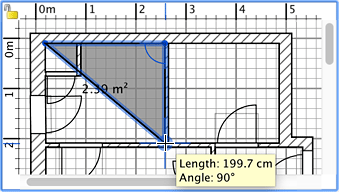
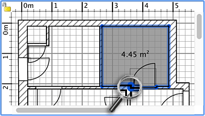

To draw rooms, you must first choose Plan > Create rooms or select the Create rooms tool.
Create
rooms tool
You may create a new room or a new surface in home plan using either way:
- click at each corner of the room, then double-click at its last point
or press the Escape key after you added the last point,
- double-click anywhere inside an existing closed surface (i.e. surrounded by walls).
When you draw a room point by point under magnetism activated, a point guide will show up to help you click at each
corner of the room. A room created with a double click will cover the floor area from wall to wall surrounding the
point where you clicked, and will include also the half doorstep of each door placed on these walls. This feature ensures
rooms join each other correctly in the 3D view when the doors between
rooms are
opened.
So, unless you want to create special surfaces that are not attached to walls (like outdoor paths), you should draw
walls and add doors first to your home to benefit of the ability of the software
to display alignment guides and to compute rooms including the half doorstep of each door.
New rooms are simultaneously
drawn in the plan and in the 3D view.
|  |
| Drawing a room point by point |
|  |
Creating with a double-click
a room that includes an half doorstep |
To end
the drawing of rooms, choose Plan > Select or select the Select tool (or an other tool).
Select tool
|